คู่มือพนักงานต้อนรับ · Front desk · Rooms
ผังห้องพัก การจอง และการเช็คอิน
คู่มือนี้สำหรับพนักงานต้อนรับ (front desk) ครอบคลุมงานประจำวันในหน้า ผังห้องพัก:
ดูห้องว่าง สร้างการจอง (รายวัน รายเดือน และ OTA) ลงทะเบียนผู้เข้าพัก เช็คอิน เปลี่ยนวัน ต่อ หรือยกเลิกการจอง
จองในนามบริษัท แจ้งซ่อมหรือทำความสะอาดห้อง และพิมพ์ใบเสร็จซ้ำ
เกี่ยวข้อง: เรื่องเงิน (บันทึกรายรับ ออกใบเสร็จ คืนเงินมัดจำ สัญญาเช่ารายเดือน)
อยู่ในคู่มือการเงิน ส่วนการลงเวลาและการลาอยู่ในคู่มือบุคคล
เปิด ผังห้องพัก จากเมนูด้านบน หน้านี้แสดงทุกห้องเป็นแถว และวันที่เป็นคอลัมน์
แถบสีในตารางคือการจองแต่ละรายการ
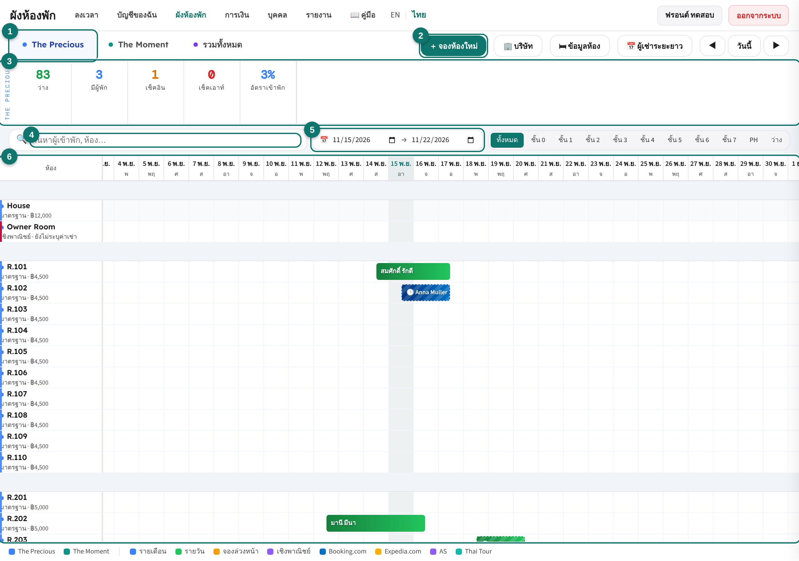
- เลือกโครงการ: The Precious, The Moment หรือ รวมทั้งหมด
- ＋ จองห้องใหม่: เปิดฟอร์มจอง (ดูหัวข้อ 2) ถัดไปมีปุ่ม บริษัท, ข้อมูลห้อง, ผู้เช่าระยะยาว
และ ◀ วันนี้ ▶ สำหรับเลื่อนผังทีละ 30 วัน
- สรุปวันนี้: ห้องว่าง มีผู้พัก เช็คอิน เช็คเอาท์ และอัตราเข้าพัก
- ค้นหา: พิมพ์ชื่อผู้เข้าพักหรือเลขห้อง
- หาห้องว่าง: เลือกวันเข้าและวันออก ระบบจะแสดงห้องที่ว่างช่วงนั้น เลือกชั้นได้จากปุ่มด้านขวา
- ตารางห้อง: คลิกช่องว่างเพื่อจองห้องนั้นในวันนั้นได้ทันที คลิกแถบสีเพื่อเปิดรายละเอียดการจอง (หัวข้อ 5)
สีของแถบ (คำอธิบายอยู่ใต้ตาราง): น้ำเงิน = รายเดือน · เขียว = รายวัน · ส้ม = จองล่วงหน้า ·
ม่วง = เชิงพาณิชย์ · แถบลายทาง = ยังไม่เช็คอิน
2
จองห้องใหม่ (รายวัน / รายเดือน)New booking
กด ＋ จองห้องใหม่ หรือคลิกช่องว่างในผัง แล้วกรอกฟอร์ม
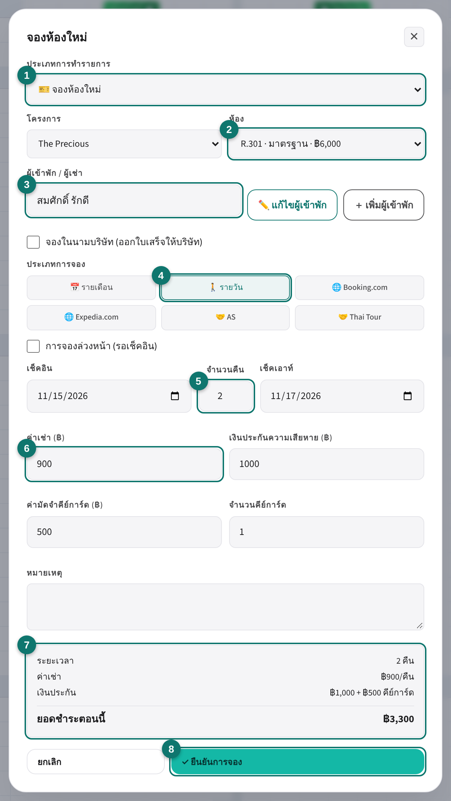
- ประเภทการทำรายการ: ใช้ จองห้องใหม่ (ตัวเลือกอื่นดูหัวข้อ 10)
- โครงการและห้อง: ในรายการห้องจะเห็นประเภทห้องและราคาตั้งต้น
- ผู้เข้าพัก: พิมพ์ชื่อ ถ้าเคยพักแล้วระบบจะแนะนำชื่อให้ ถ้าเป็นลูกค้าใหม่กด ＋ เพิ่มผู้เข้าพัก (หัวข้อ 4)
- ประเภทการจอง: รายเดือน · รายวัน · Booking.com · Expedia.com · AS · Thai Tour
- วันที่: ใส่วันเช็คอิน แล้วใส่จำนวนคืนหรือวันเช็คเอาท์ ระบบคำนวณอีกช่องให้
- ค่าเช่าและเงินประกัน: รายวันใส่ราคาต่อคืน รายเดือนใส่ต่อเดือน และใส่ค่ามัดจำคีย์การ์ดกับจำนวนบัตร
- สรุปยอด: ตรวจ ยอดชำระตอนนี้ ให้ตรงกับเงินที่รับจากลูกค้า
- ✓ ยืนยันการจอง
สำคัญ: ถ้าไม่ได้ติ๊ก “การจองล่วงหน้า” ระบบถือว่าแขกเข้าพักทันที
สถานะเป็น “เข้าพักแล้ว” และบันทึกยอดในกล่องสรุปเป็นรายรับที่ได้รับแล้วทันที
ถ้าแขกยังไม่มาหรือยังไม่จ่าย ให้ติ๊ก การจองล่วงหน้า (หัวข้อ 3)
จองทับช่วงที่ห้องไม่ว่างไม่ได้ ระบบจะเตือนใต้ฟอร์ม · ถ้าชื่อผู้เข้าพักอยู่ในบัญชีดำ
จะมีแถบสีแดงพร้อมเหตุผลขึ้นทันทีที่พิมพ์ชื่อ · เลือกประเภทรายเดือนจะมีช่องประเภทสัญญาและรอบชำระแรกเพิ่ม
(รายละเอียดสัญญาเช่าดูในคู่มือการเงิน หัวข้อ “ผู้เช่าระยะยาว”)
3
จองผ่าน OTA และจองล่วงหน้าOTA & advance reservations
การจองจาก Booking.com, Expedia, AS หรือ Thai Tour และการจองที่แขกจะมาภายหลัง
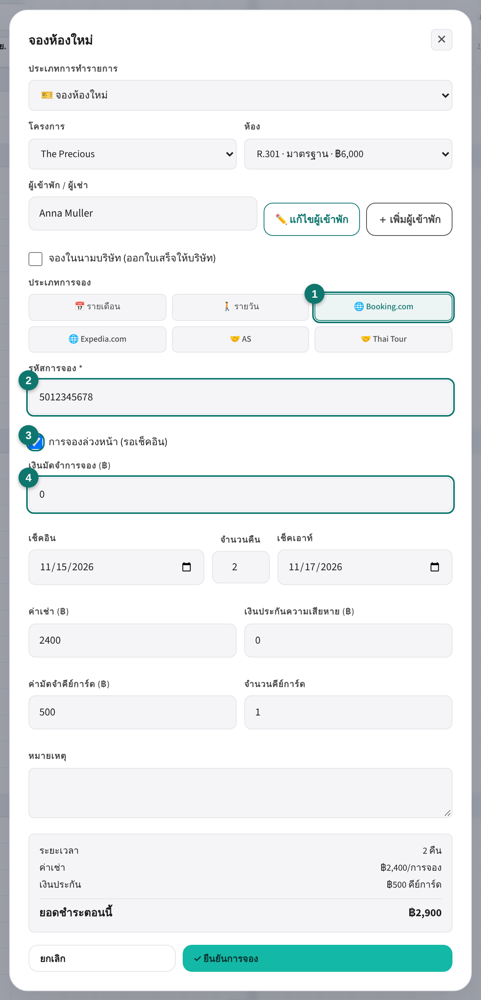
- เลือกช่องทาง: เช่น Booking.com
- รหัสการจอง *: ต้องกรอก ให้คัดลอกเลขการจองจากอีเมล/หลังบ้าน OTA ให้ตรงทุกตัว
เพราะระบบใช้เลขนี้จับคู่กับยอดเงินที่ OTA โอนมา
- การจองล่วงหน้า (รอเช็คอิน): ติ๊กเมื่อแขกยังไม่มาถึง แถบในผังจะเป็นลายทาง
- เงินมัดจำการจอง: ถ้าแขกโอนมัดจำมาแล้ว ใส่ยอดที่นี่ (ถ้าไม่มีใส่ 0) ยอดนี้จะหักออกตอนเช็คอิน
สำหรับ OTA ช่อง ค่าเช่า ใส่ยอดรวมทั้งการจอง (ไม่ใช่ต่อคืน) ตามที่อีเมล OTA แจ้ง
4
ลงทะเบียนผู้เข้าพักGuest registration
กด ＋ เพิ่มผู้เข้าพัก ในฟอร์มจอง เพื่อเก็บข้อมูลลูกค้าไว้ใช้ครั้งต่อไป
(ลูกค้าเดิมกด ✏️ แก้ไขผู้เข้าพัก)
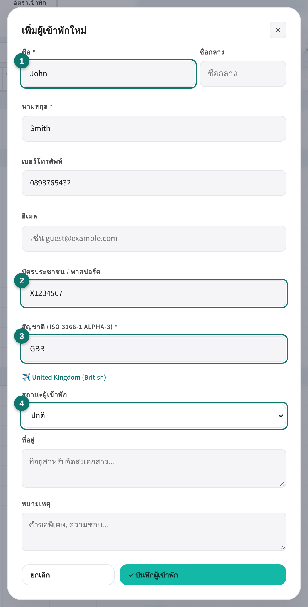
- ชื่อ / นามสกุล *: ใช้ชื่อตามบัตร
- บัตรประชาชน / พาสปอร์ต: ต้องมีก่อนเช็คอิน (ถ้าไม่ใส่ตอนนี้ ระบบจะถามตอนเช็คอิน)
- สัญชาติ *: รหัส 3 ตัวอักษร เช่น THA, GBR, USA
- สถานะ: ปกติ หรือ บัญชีดำ / คำเตือน พร้อมเหตุผล ระบบจะเตือนทุกครั้งที่มีคนจองให้ชื่อนี้
5
รายละเอียดการจองBooking details
คลิกแถบสีในผังห้อง จะมีแผงรายละเอียดเปิดขึ้นทางขวา ปุ่มที่เห็นขึ้นกับสถานะการจอง
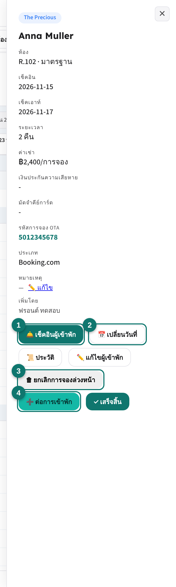
- เช็คอินผู้เข้าพัก: มีเฉพาะการจองล่วงหน้าที่ยังไม่เช็คอิน (หัวข้อ 6)
- เปลี่ยนวันที่: เลื่อนวันเข้า-ออกของการจองที่ยังไม่เช็คอิน (หัวข้อ 7)
- ยกเลิกการจอง (หัวข้อ 8)
- ต่อการเข้าพัก: เพิ่มคืน/เดือนต่อจากวันเช็คเอาท์เดิม (หัวข้อ 7)
ปุ่ม ประวัติ แสดงการเข้าพักและโน้ตทั้งหมดของลูกค้าคนนี้ · ✏️ แก้ไข ข้างหมายเหตุใช้แก้โน้ตของการจอง
(ระบบเก็บว่าใครแก้ เมื่อไร) · ผู้เช่ารายเดือนที่เข้าพักแล้วจะมีปุ่ม ย้ายห้อง และ ย้ายออกก่อนกำหนด เพิ่ม
6
เช็คอินผู้เข้าพักCheck-in
เมื่อแขกที่จองล่วงหน้ามาถึง เปิดรายละเอียดการจอง แล้วกด 🛎 เช็คอินผู้เข้าพัก
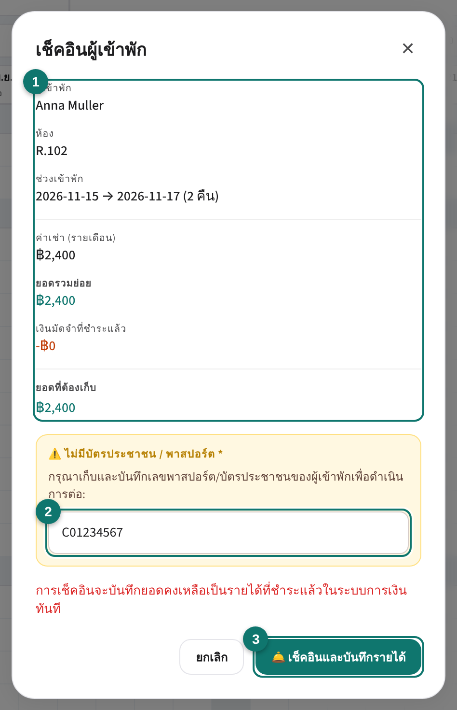
- สรุปยอด: ค่าเช่า + เงินประกัน − มัดจำที่จ่ายแล้ว = ยอดที่ต้องเก็บ เก็บเงินแขกตามยอดนี้
- เลขบัตร/พาสปอร์ต: ช่องนี้ขึ้นเมื่อยังไม่มีเลขบัตรของแขกในระบบ ต้องกรอกจึงเช็คอินได้
- เช็คอินและบันทึกรายได้: ระบบเปลี่ยนสถานะเป็นเข้าพัก และบันทึกยอดคงเหลือเป็นรายได้ที่รับแล้วทันที
กดเช็คอินหลังจากรับเงินครบแล้วเท่านั้น เพราะระบบบันทึกเป็นเงินที่รับแล้วทันที
7
เปลี่ยนวันที่ และต่อการเข้าพักChange dates & extend
เปลี่ยนวันที่ ใช้กับการจองล่วงหน้าที่ยังไม่เช็คอิน เช่น แขกขอเลื่อนวันมา
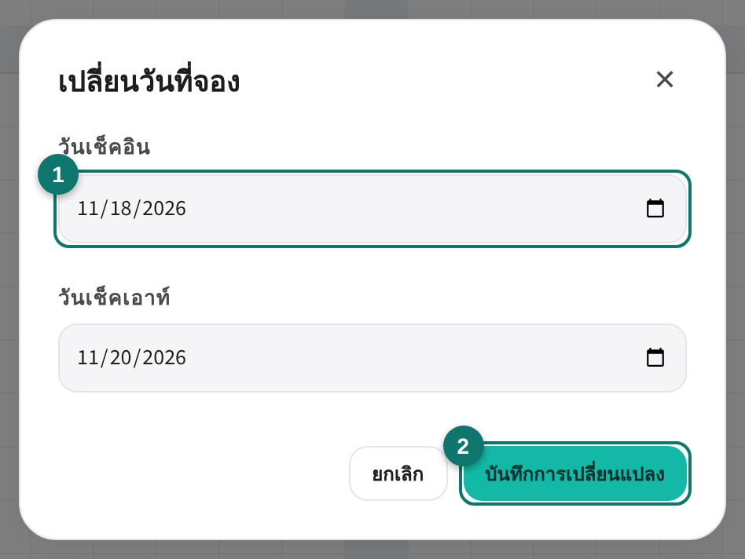
- วันเข้า / วันออกใหม่
- บันทึก: ถ้าห้องเดิมไม่ว่างช่วงใหม่ ระบบจะเสนอห้องอื่นที่ว่างให้เลือก แล้วกดยืนยันและย้ายห้อง
ต่อการเข้าพัก ใช้เมื่อแขกที่พักอยู่ขอพักต่อ: กด ➕ ต่อการเข้าพัก ระบบจะเปิดฟอร์มจองที่กรอกห้อง ชื่อ และราคาเดิมไว้
โดยวันเข้าเริ่มจากวันเช็คเอาท์เดิม ปรับจำนวนคืนแล้วกดยืนยัน (การต่อจะเป็นการจองใหม่ต่อท้าย และบันทึกรายรับของช่วงที่ต่อ)
เปิดรายละเอียดการจอง แล้วกดปุ่มสีแดง ยกเลิกการจอง
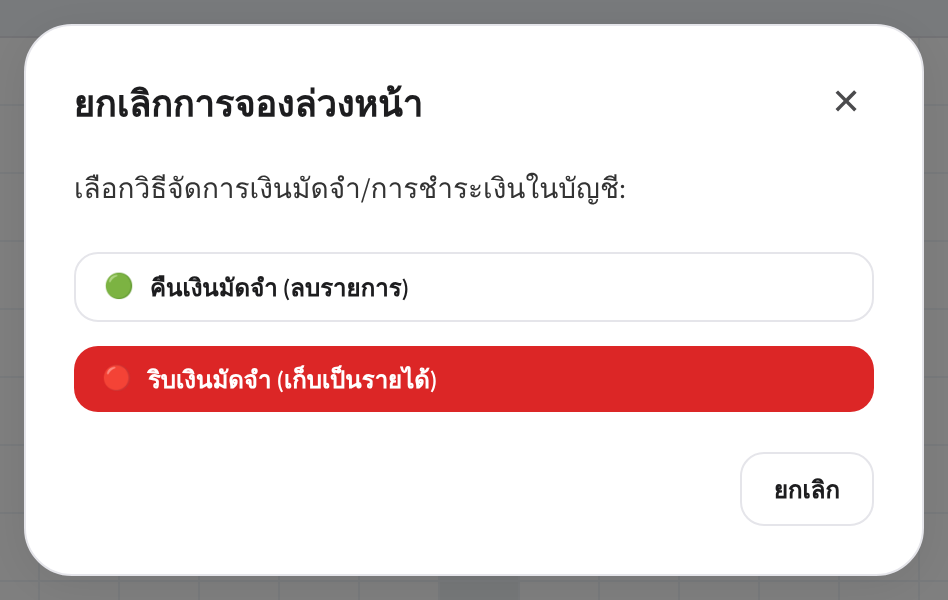
- การจองล่วงหน้า: เลือก คืนเงินมัดจำ (ลบรายการเงิน) หรือ ริบเงินมัดจำ (เก็บเป็นรายได้)
ตามที่เจ้าของกำหนด
- การจองที่เข้าพักแล้ว: ระบบถามยืนยันก่อน
- ทุกกรณีต้องพิมพ์เหตุผล ปุ่มยืนยันจะกดไม่ได้จนกว่าจะใส่เหตุผล และระบบบันทึกไว้ว่าใครยกเลิก
ยกเลิกไม่ได้ ถ้าการจองนั้นออกใบเสร็จไปแล้ว ระบบจะแจ้งเลขใบเสร็จ
ให้แจ้งฝ่ายบัญชีหรือเจ้าของยกเลิกใบเสร็จก่อน
9
จองในนามบริษัทCompany bookings
เมื่อบริษัทเป็นผู้จ่ายและต้องการใบเสร็จในนามบริษัท ให้ติ๊ก จองในนามบริษัท ในฟอร์มจอง
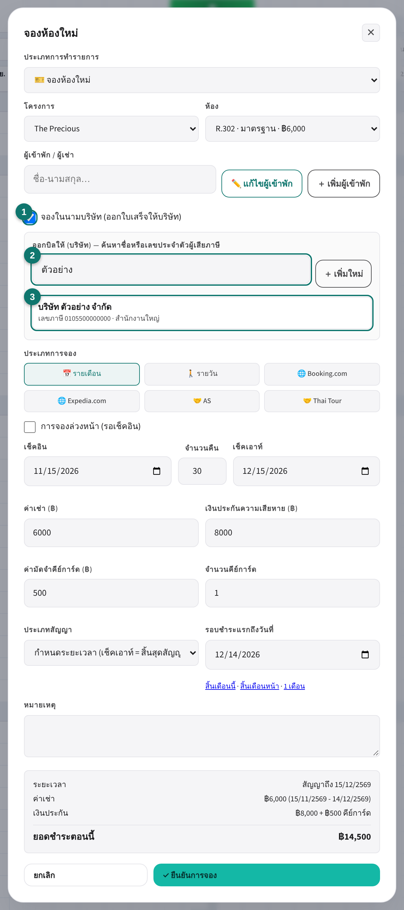
- จองในนามบริษัท: ติ๊กเพื่อเปิดช่องค้นหาบริษัท
- ค้นหา: พิมพ์ชื่อหรือเลขประจำตัวผู้เสียภาษี ถ้ายังไม่มีกด ＋ เพิ่มใหม่
(ต้องมีชื่อบริษัทและเลขผู้เสียภาษี 13 หลัก ติ๊ก “หักภาษี ณ ที่จ่าย 5%” ถ้าบริษัทหัก)
- เลือกบริษัทจากผลค้นหา
ดูหรือแก้ข้อมูลบริษัททั้งหมดได้จากปุ่ม 🏢 บริษัท บนผังห้อง
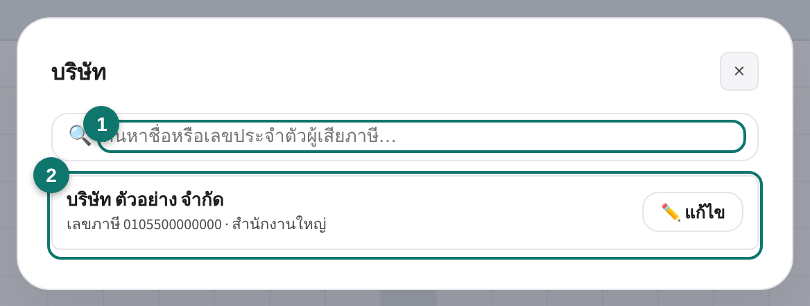
10
แจ้งซ่อม ปิดห้อง ทำความสะอาดMaintenance · close · cleaning
ใช้ฟอร์มเดียวกับการจอง แต่เปลี่ยน ประเภทการทำรายการ
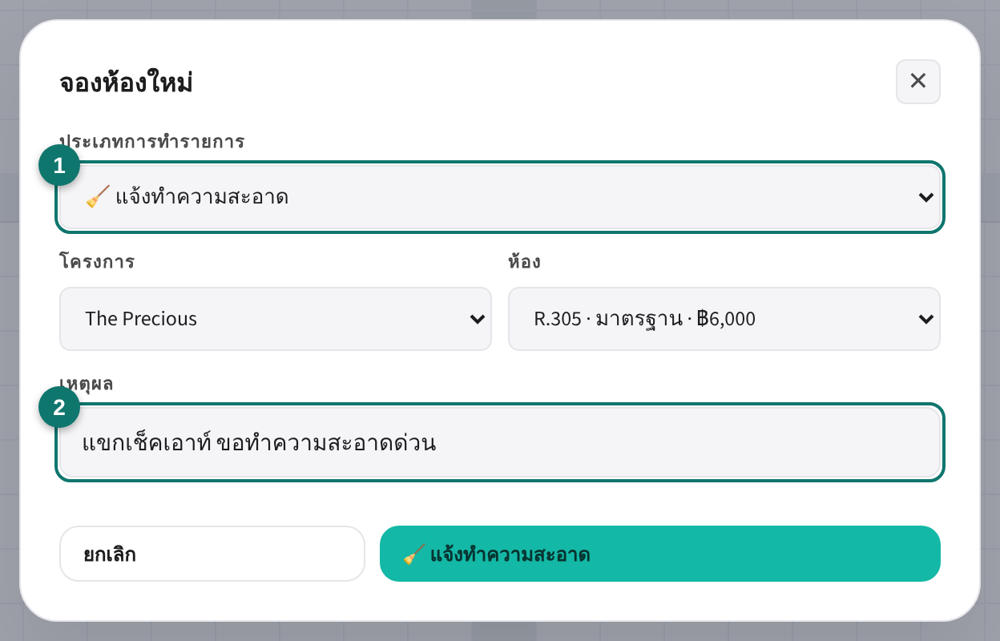
- ประเภท: 🔧 ซ่อมบำรุง · 🚫 ปิดห้อง (งดให้บริการ) · 🧹 แจ้งทำความสะอาด
- เหตุผล: เช่น “แอร์ไม่เย็น” หรือ “แขกเช็คเอาท์ ขอทำความสะอาด” แล้วกดยืนยัน
งานทำความสะอาดจะไปขึ้นที่หน้า รายการงานของฉัน ของแม่บ้าน และสถานะห้องจะกลับเป็นว่างเมื่อแม่บ้านทำเสร็จ ·
ปิดห้องที่ยังมีแขกพักอยู่ไม่ได้ · คลิกป้ายซ่อม/ปิดห้องในผังเพื่อดูเหตุผล และกดยกเลิกเมื่อซ่อมเสร็จ
11
พิมพ์ใบเสร็จซ้ำReprint a receipt
พนักงานต้อนรับออกใบเสร็จใหม่ไม่ได้ (ฝ่ายบัญชีหรือเจ้าของเป็นผู้ออก) แต่พิมพ์ใบที่ออกแล้วซ้ำได้
ไปที่เมนู รายงาน แล้วเลือกแท็บ รายงานใบเสร็จ
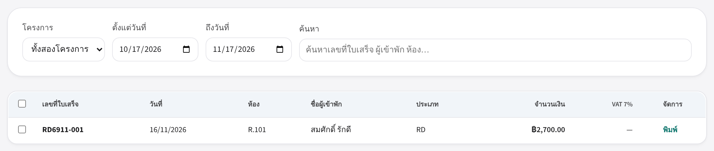
- เลือกโครงการและช่วงวันที่ หรือพิมพ์เลขใบเสร็จ ชื่อแขก หรือเลขห้องในช่อง ค้นหา
- กด พิมพ์ ท้ายแถว ใบเสร็จจะเปิดในแท็บใหม่ แล้วสั่งพิมพ์จากเบราว์เซอร์
- ต้องการพิมพ์หลายใบ: ติ๊กช่องหน้าแถว แล้วกด พิมพ์ใบเสร็จที่เลือก